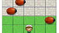
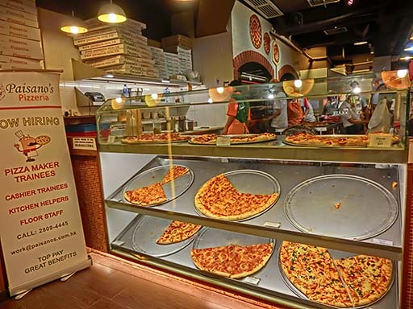

-
Build Your Own 2048!
I will definitely take this Udacity class next. I believe it's free and takes only about a day.
-

Web Arcade Game - BugFrogger
Click the link. Give it a shot. It is a simple version of the classic Frogger using different art, different characters and different mechanics.
-
Online Resume
Another Udacity project for this course but handy as it is an up-to-date resume. You can check this out or find the absolute latest on LinkedIn.
-

Cam's Pizzeria
This is the object of the jank-elimination part of this assignment. If you reading this you are looking at the optimized version in my portfolio.